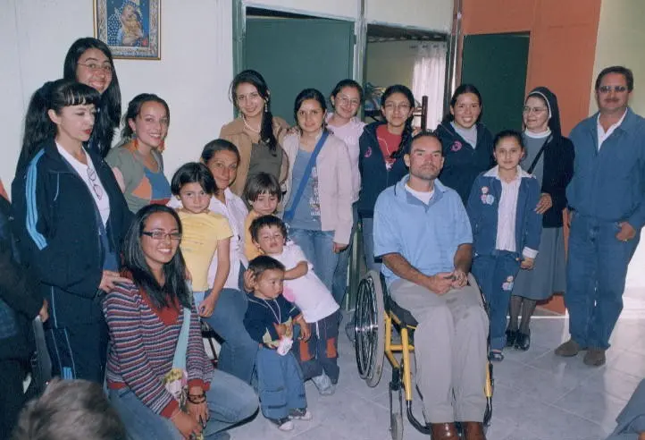
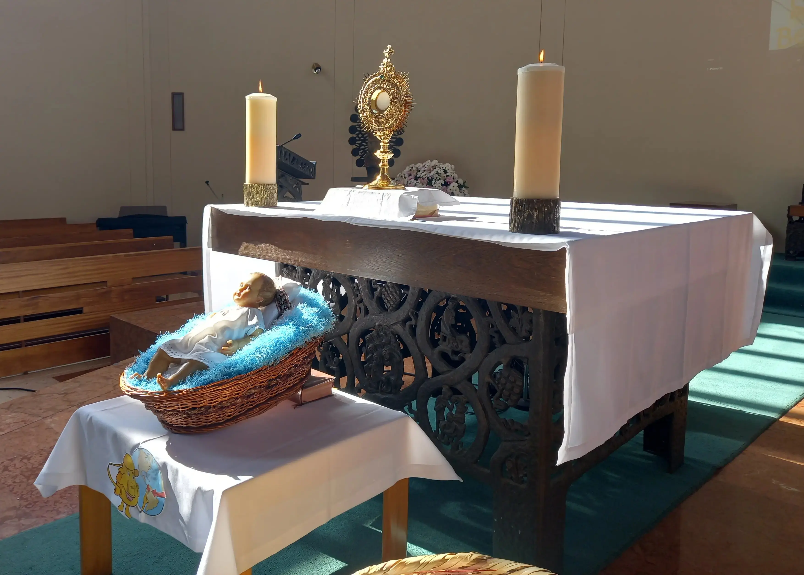
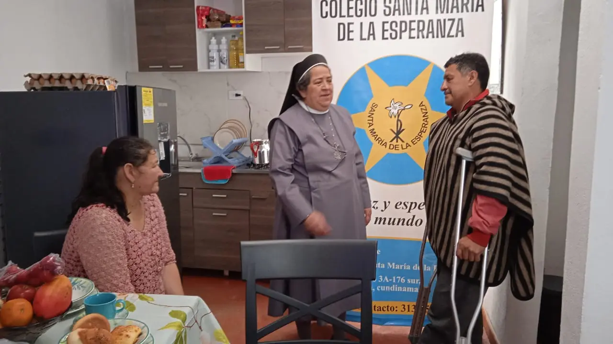

Proyección Social
Formamos estudiantes solidarios y comprometidos que transforman realidades a través del servicio y la empatía.

Una educación que se vive en la solidaridad
La obra social del Colegio Santa María de la Esperanza nace del carisma de la congregación de las Hermanas del Niño Jesús Pobre, inspiradas en el legado de la Madre Clara Fey. Desde sus inicios, la comunidad educativa ha promovido el valor de la solidaridad como una forma concreta de vivir el amor al prójimo.
A través de diferentes acciones pastorales y sociales, estudiantes, familias y docentes participan en iniciativas que buscan apoyar a personas de escasos recursos o en situaciones de dificultad económica o familiar, generando espacios de encuentro, ayuda y esperanza para la comunidad.
Acciones de solidaridad
Experiencias que permiten vivir el valor del servicio.

Adoración eucarística
Cada 25 del mes la comunidad educativa se reúne para celebrar la adoración al Niño Jesús, tradición promovida desde los inicios de la congregación por la Madre Clara Fey.
Como signo de ofrenda y solidaridad, los estudiantes llevan alimentos que luego son organizados y entregados a familias o personas necesitadas de la comunidad.
Grupo Semillas
Este grupo está conformado por estudiantes de los grados 9°, 10° y 11°, quienes participan activamente en visitas a ancianatos, escuelas y comunidades cercanas con necesidades sociales.
Durante estas jornadas realizan actividades recreativas, acompañamiento y comparten el mensaje que inspiró a la Madre Clara Fey: conducir a los niños y jóvenes a Jesús y fomentar el amor por la Eucaristía.
Peregrinación al pobre
Cada curso del colegio apadrina durante el año una fundación, organización o familia en condición de vulnerabilidad.
Los estudiantes organizan actividades solidarias para recolectar alimentos, artículos de aseo y compartir momentos de recreación, fomentando la empatía y el compromiso con quienes más lo necesitan.

Proyecto PROCASITA
Liderado por los estudiantes de grado 11°, este proyecto busca reunir fondos para brindar una vivienda digna o mejorar las condiciones de vivienda de una familia necesitada.
A través de actividades como rifas, bazares, jean days, el Bono de la Solidaridad y el tradicional Banquete de la Solidaridad, toda la comunidad educativa se une para hacer realidad este sueño.